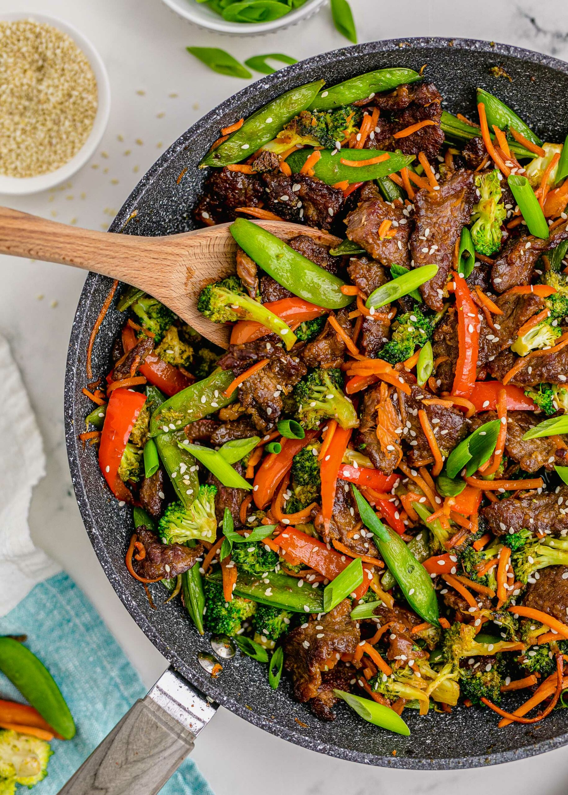

Asian Stir Fry

Ingredience
- Neutral vegetable oil
- Sesame Oil
- Sesame Seeds
- Beef strips
- Broccoli
- Soy Sauce
- Rice Vinegar
- Sichuan Peppers
Steps
- Warm up the Wok
- When it's piping hot, add some neutral vegetable oil
- Drop your beef strips and give them a quick stir for 2 mins
- Take the beef out and reserve the oil
- Repeat step 3 for the broccoli sprouts
- When they are bright green at almost done, add in your chopped peppers
- Add in your beef, and the other ingredients
- If needed, dissolve cornstarch in cold water and add it at the end
- Serve!